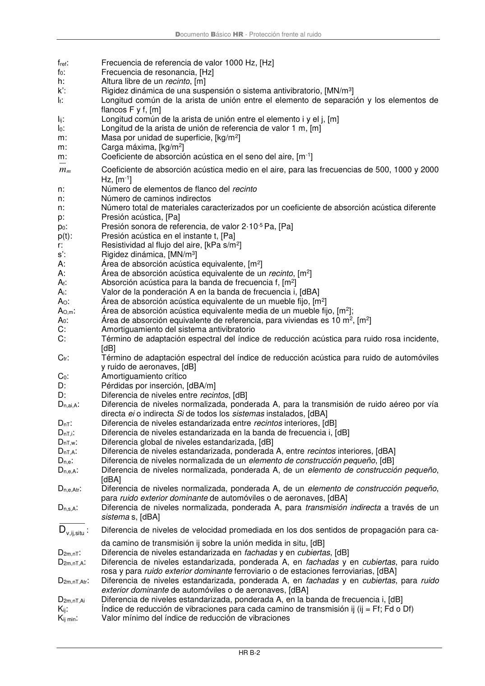

DB-HR · Página 60 · versión 2019-12-20
SHA256: a67baeca5138bb1f121f797d23a79a4557bd9ac4abacd954024893e05411eeab · página física 60 de 80 · métodos de encabezado
solo si están cotejados.
Formatos: Markdown · JSON de bloques · PDF p. 60 · imagen PNG
Documento Básico HR - Protección frente al ruido HR B-2 fref: Frecuencia de referencia de valor 1000 Hz, [Hz] f0: Frecuencia de resonancia, [Hz] h: Altura libre de un recinto, [m] k’: Rigidez dinámica de una suspensión o sistema antivibratorio, [MN/m3] lf: Longitud común de la arista de unión entre el elemento de separación y los elementos de flancos F y f, [m] lij: Longitud común de la arista de unión entre el elemento i y el j, [m] l0: Longitud de la arista de unión de referencia de valor 1 m, [m] m: Masa por unidad de superficie, [kg/m2] m: Carga máxima, [kg/m2] m: Coeficiente de absorción acústica en el seno del aire, [m-1] m m Coeficiente de absorción acústica medio en el aire, para las frecuencias de 500, 1000 y 2000 Hz, [m-1] n: Número de elementos de flanco del recinto n: Número de caminos indirectos n: Número total de materiales caracterizados por un coeficiente de absorción acústica diferente p: Presión acústica, [Pa] p0: Presión sonora de referencia, de valor 2·10-5 Pa, [Pa] p(t): Presión acústica en el instante t, [Pa] r: Resistividad al flujo del aire, [kPa s/m2] s’: Rigidez dinámica, [MN/m3] A: Área de absorción acústica equivalente, [m2] A: Área de absorción acústica equivalente de un recinto, [m2] Af: Absorción acústica para la banda de frecuencia f, [m2] Ai: Valor de la ponderación A en la banda de frecuencia i, [dBA] AO: Área de absorción acústica equivalente de un mueble fijo, [m2] AO,m: Área de absorción acústica equivalente media de un mueble fijo, [m2]; A0: Área de absorción equivalente de referencia, para viviendas es 10 m2, [m2] C: Amortiguamiento del sistema antivibratorio C: Término de adaptación espectral del índice de reducción acústica para ruido rosa incidente, [dB] Ctr: Término de adaptación espectral del índice de reducción acústica para ruido de automóviles y ruido de aeronaves, [dB] C0: Amortiguamiento crítico D: Pérdidas por inserción, [dBA/m] D: Diferencia de niveles entre recintos, [dB] Dn,ai,A: Diferencia de niveles normalizada, ponderada A, para la transmisión de ruido aéreo por vía directa ei o indirecta Si de todos los sistemas instalados, [dBA] DnT: Diferencia de niveles estandarizada entre recintos interiores, [dB] DnT,i: Diferencia de niveles estandarizada en la banda de frecuencia i, [dB] DnT,w: Diferencia global de niveles estandarizada, [dB] DnT,A: Diferencia de niveles estandarizada, ponderada A, entre recintos interiores, [dBA] Dn,e: Diferencia de niveles normalizada de un elemento de construcción pequeño, [dB] Dn,e,A: Diferencia de niveles normalizada, ponderada A, de un elemento de construcción pequeño, [dBA] Dn,e,Atr: Diferencia de niveles normalizada, ponderada A, de un elemento de construcción pequeño, para ruido exterior dominante de automóviles o de aeronaves, [dBA] Dn,s,A: Diferencia de niveles normalizada, ponderada A, para transmisión indirecta a través de un sistema s, [dBA] situ ,ij, v D : Diferencia de niveles de velocidad promediada en los dos sentidos de propagación para ca- da camino de transmisión ij sobre la unión medida in situ, [dB] D2m,nT: Diferencia de niveles estandarizada en fachadas y en cubiertas, [dB] D2m,nT,A: Diferencia de niveles estandarizada, ponderada A, en fachadas y en cubiertas, para ruido rosa y para ruido exterior dominante ferroviario o de estaciones ferroviarias, [dBA] D2m,nT,Atr: Diferencia de niveles estandarizada, ponderada A, en fachadas y en cubiertas, para ruido exterior dominante de automóviles o de aeronaves, [dBA] D2m,nT,Ai Diferencia de niveles estandarizada, ponderada A, en la banda de frecuencia i, [dB] Kij: Índice de reducción de vibraciones para cada camino de transmisión ij (ij = Ff; Fd o Df) Kij min: Valor mínimo del índice de reducción de vibraciones
